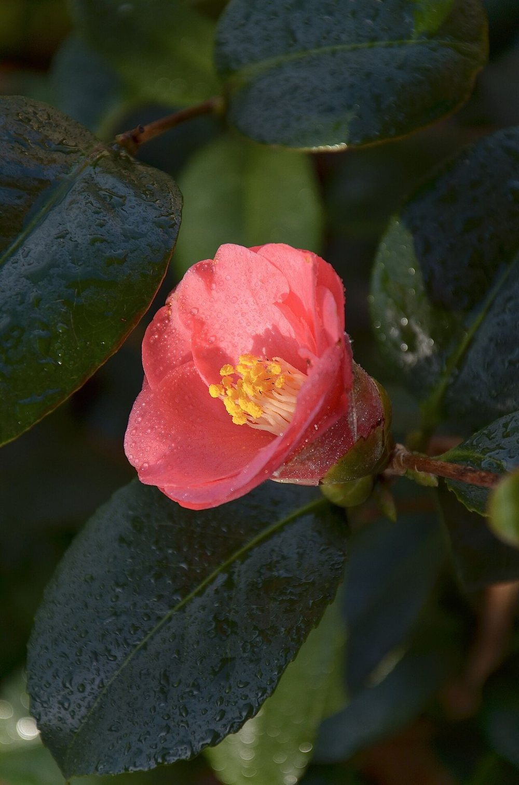
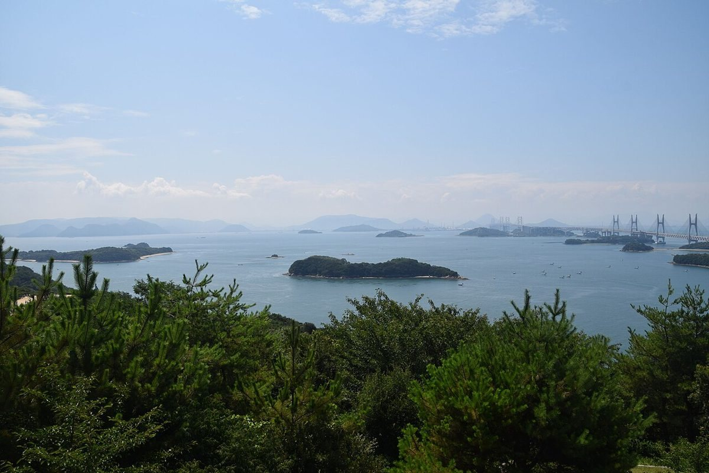
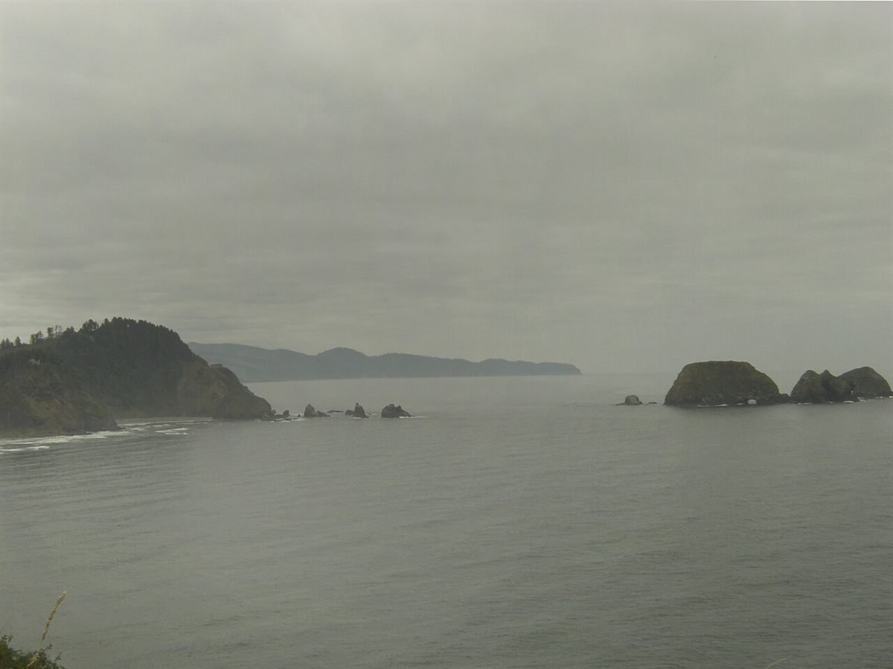
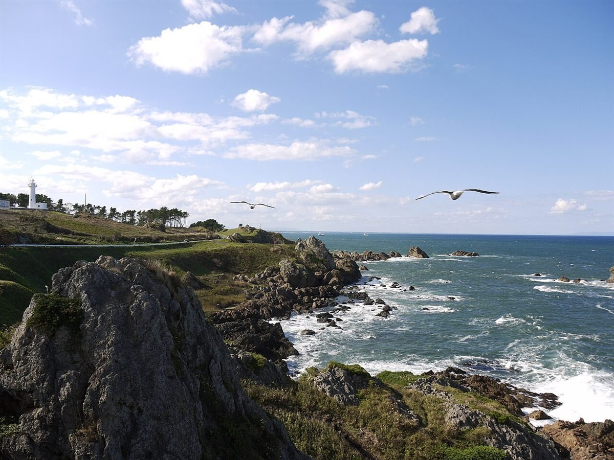

制作側の連想
「SHANTI」と「五島列島」から考えたこと
「SHANTI(シャンティ)」は、サンスクリット語で「平和・安らぎ」の意味の語として知られています。ただし、お店の名前の由来は分かりません。また、五島列島は海に囲まれた島々で、椿の木が多い土地としても知られています。こちらも、お店との関係は分かりません。
そこで制作側は、「夜の海に浮かぶ島影」と「濃い葉の中に灯る紅い椿」を思い浮かべ、墨のような暗がりに椿の紅をひとつ置くデザインにしました。お店の考えとは関係のない、制作側の連想です。
島めぐり
海と島の景色を、4つ。
写真は五島市の風景ではありません。島や海を思い浮かべて選んだ、国内他地域・国外のイメージです。



ご案内
お店のこと(確認できたものだけ)
| 所在地 | 〒853-0042 長崎県五島市吉田町2564-2 |
|---|---|
| 電話 | なし |
| 営業時間 | 準備中 |
| 定休日 | 準備中 |
| ご予約 | 準備中 |
| 駐車場 | 準備中 |
| SNS | Instagram @shanti.hair |